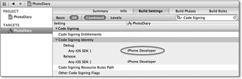
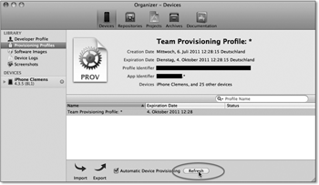
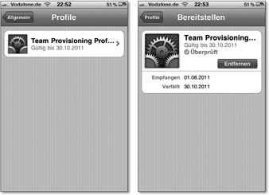

Zum Online-Shop
Zum Online-Shop
3.6 Die App auf einem Gerät testen
Wenn Sie bislang Ihre Apps nur im Simulator getestet haben, wird es jetzt höchste Zeit, sie auch mal auf einem Gerät auszuführen. Wie in Kapitel 1 bereits beschrieben wurde, müssen Sie sich dafür bei einem von drei Entwicklerprogrammen registrieren, um Apps auf einem Gerät installieren und ausführen zu dürfen. Zum Zeitpunkt der Manuskripterstellung war die Aufteilung der Entwicklerprogramme wie folgt:
| Developer Program | Developer Enterprise Programm | Developer University Program | |
| Ressourcen aus dem Entwicklerprogramm | Ja | Ja | Ja |
| iOS SDK | Ja | Ja | Ja |
| Pre-Release Software & Tools | Ja | Ja | Nein |
| Entwicklerteam | Nein/Ja[18](Individual/Company) | Ja | Ja |
| Zugang zu den Entwicklerforen | Ja | Ja | Ja |
| Anzahl Supportanfragen pro Teilnahmejahr | 2 | 2 | - |
| App-Tests auf Entwicklungsgeräten | Ja | Ja | Ja |
| Teilnahmegebühr pro Jahr[19](Quelle: https://developer.apple.com/programs/which-program/; Stand: viertes Quartal 2011) | 99 $ | 299 $ | frei |
| Distributionsmöglichkeiten | |||
| Ad-hoc | Ja | Ja | Nein |
| In-House | Nein | Ja | Nein |
| App-Store | Ja | Nein | Nein |
Welches Entwicklerprogramm aus Tabelle 3.3 zu Ihnen passt, können Sie am einfachsten über den Distributionsweg entscheiden. Wenn Sie Ihre Apps über den App-Store verbreiten möchten, kommt für Sie nur das Developer Program in Frage. Sie können Ihre Apps über Ad-hoc-Distributionen auch einem ausgewählten Personenkreis mit maximal 100 Geräten zur Verfügung stellen.
Wollen Sie Ihre App hingegen nur firmenintern auf über hundert Geräten einsetzen, sollten Sie das Developer Enterprise Program wählen. Dieses Programm ist für große Firmen gedacht, die iOS-Apps für ihre Geschäftsprozesse einsetzen möchten. Sie können an diesem Programm nur teilnehmen, wenn Ihr Betrieb eine DUNS-Nummer besitzt. Diese Nummern vergibt die Firma Dun & Bradstreet (http://www.dnbgermany.de/), die ein weltweiter Dienstleister für Wirtschaftsinformationen ist.
Das Developer University Program ist für Universitäten und Hochschulen gedacht, die sich im Rahmen von Forschung und Lehre mit der Entwicklung unter iOS beschäftigen wollen.
| Anmeldung zu den Entwicklerprogrammen |
|
Unter der URL http://developer.apple.com/programs/ können Sie sich zu den verschiedenen iOS-Entwicklerprogrammen anmelden. |
3.6.1 Das iOS Developer Program
Wenn Sie Ihre Apps über den App-Store oder nur innerhalb eines kleinen Personenkreises vertreiben möchten, sollten Sie das iOS Developer Program wählen. Es ist sowohl für private und freiberufliche als auch für angestellte Entwickler gedacht. Innerhalb des Programms gibt es noch eine weitere Unterscheidung zwischen Einzelpersonen und Firmen.
Sie sollten sich als Einzelperson anmelden, wenn Sie privat oder freiberuflich iOS-Apps entwickeln möchten. Einzelpersonen können im Gegensatz zu Firmenentwicklern keine Entwicklungsteams bilden. Firmenentwickler müssen beim Anmeldeprozess einen Bevollmächtigten angeben, über den Apple die Richtigkeit ihrer Angaben überprüft. Sie können aber sich selbst als Repräsentanten angeben. Dann möchte Apple während des Anmeldeprozesses in der Regel einen Handelregisterauszug von Ihrer Firma zugefaxt bekommen.
Wenn Sie den Anmeldeprozess durchlaufen haben, überprüft Apple Ihre Angaben und schaltet Sie frei. Das kann ein bis zwei Wochen dauern. Nach der Freischaltung erhalten Sie eine E-Mail mit einem Link in den Apple Online Store, über den Sie die Teilnahmegebühr entrichten können. Nach der Bezahlung dauert es ungefähr einen Tag, bis Apple Ihren Zugang zu den Ressourcen im Entwicklerportal freigeschaltet hat.
Nach der Freischaltung haben Sie Zugriff auf das iOS Provisioning Portal, über das Sie Ihre Zertifikate verwalten und die Bereitstellungsprofile erzeugen können.
3.6.2 Entwicklungszertifikat und Entwicklungsprofile
Sie benötigen ein Entwicklungszertifikat, um Bereitstellungsprofile erzeugen zu können. Mit diesen können Sie dann Ihre Apps signieren und auf Ihren iOS-Geräten installieren und ausführen.
| Das iOS Provisioning Portal |
|
Öffnen Sie das iOS Provisioning Portal über die URL https://developer.apple.com/ios/manage/overview/index.action. Dort finden Sie oben in der rechten Spalte den Program User Guide. Das ist das zentrale Dokument, das alle möglichen Aktionen innerhalb des Portals beschreibt. Sie finden dort außerdem Videos, die die notwendigen Schritte für verschiedene Vorgänge im Portal genau beschreiben. |
Das Entwicklungszertifikat erzeugen Sie über eine Zertifikatsanfrage, die Sie ihrerseits mit dem Programm Schlüsselbundverwaltung erzeugen können. Öffnen Sie dazu in den Einstellungen dieser Applikation den Reiter Zertifikate. Dort schalten Sie die Eigenschaften OCSP (Online Certificate Status Protocol) und CRL (Certificate Revocation List) aus.
Das Dokument für die Zertifikatanfrage erzeugen Sie über den Menüpunkt Schlüsselbundverwaltung · Zertifikatsassistent · Zertifikat einer Zertifizierungsinstanz anfordern... Geben Sie unter E-Mail des Benutzers die E-Mail-Adresse ein, die Sie auch im Entwicklerportal angegeben haben. Außerdem müssen Sie Ihren Namen angeben. Da Sie die Anfrage auf der Festplatte speichern, brauchen Sie keine E-Mail für die Zertifizierungsinstanz anzugeben. Entfernen Sie außerdem den Haken auf der Checkbox Eigene Schlüsselpaarinformation festlegen
Abbildung 3.41 Erzeugung einer Zertifikatsanfrage
Nachdem Sie auf Fortfahren geklickt haben, müssen Sie eine Datei auswählen, in der Sie die Informationen speichern möchten. Anschließend müssen Sie noch eine Schlüssellänge von 2048 Bits und den Algorithmus RSA auswählen. Sie können jetzt die erzeugte Datei in das Provisioning Portal hochladen.
Rufen Sie das Portal in Ihrem Browser auf, und öffnen Sie unter dem Punkt Certificates den Reiter Development. Dort sehen Sie eine Anleitung für die Erzeugung des Zertifikats und einen Button Datei auswählen, über den Sie die gerade erzeugte Anfrage auswählen können. Danach laden Sie die Datei über den Button Submit hoch. Sie bekommen eine E-Mail-Benachrichtigung, wenn Apple Ihre Zertifikatsanfrage akzeptiert oder ablehnt.
Wenn Apple Ihre Zertifikatsanfrage akzeptiert hat, können Sie aus dem Entwicklerportal das erzeugte Zertifikat herunterladen. Sie finden es im Portal unter Certificates und dem Reiter Development. Es ist ein Jahr ab dem Erzeugungsdatum gültig. Öffnen Sie die heruntergeladene Datei mit dem Zertifikat durch einen Doppelklick. Die Schlüsselbundverwaltung fragt Sie dann über einen Dialog, in welchen Schlüsselbund Sie das Zertifikat importieren wollen. Hier wählen Sie den Anmeldeschlüsselbund aus.
Als Nächstes müssen Sie Ihr iPhone oder iPad als Entwicklungsgerät anmelden. Öffnen
Sie dazu in Xcode den Organizer über Window · Organizer oder  +
+  +
+  , und verbinden Sie Ihr iOS-Gerät über ein passendes Kabel mit Ihrem Computer.
, und verbinden Sie Ihr iOS-Gerät über ein passendes Kabel mit Ihrem Computer.
Abbildung 3.42 Geräteregistrierung
Öffnen Sie im Organizer den Reiter Devices, wo Sie in der linken Seitenleiste Ihr iOS-Gerät finden. Wenn Sie es auswählen, zeigt Ihnen der Organizer ein Bild und einige technische Daten an. Außerdem sollte dort der Button Use for Development erscheinen, wenn Sie das Gerät auf dem Rechner noch nicht registriert haben (siehe Abbildung 3.42).
Wenn Sie diesen Button anklicken, beginnt Xcode mit der Registrierung des Geräts im Portal. Dazu müssen Sie Ihr Login und Ihr Passwort für das Portal eingeben. Außerdem müssen Sie das Passwort für Ihren Schlüsselbund eingeben, damit Xcode von dort das Entwicklungszertifikat lesen kann. Bei einer unbekannten iOS-Version auf dem Gerät importiert Xcode außerdem noch notwendige Daten des Betriebssystems von dort.
| Registrierungsstatus |
|
Den Registrierungsstatus können Sie auch in der Seitenleiste sehen. Dort erscheint neben einem nicht registrierten Gerät ein grauer Tropfen. Bei registrierten Geräten mit gültigen Profilen oder Zertifikaten ist der Tropfen grün. Bei ungültigen oder abgelaufenen Profilen beziehungsweise Zertifikaten zeigt der Organizer einen orangenen Tropfen an. |
Die beschriebenen Schritte laufen bis auf die Nutzereingaben automatisch ab. Bei diesem Prozess erzeugt Xcode im Portal ein Entwicklungsprofil mit dem Namen Team Provisioning Profile, das als App ID einen Stern enthält. Profile mit dieser App ID können Sie für alle Apps verwenden, und sie sind drei Monate lang gültig. Andererseits können Sie aber mit diesen Wildcard-Profilen nicht alle iOS-Funktionen nutzen. Dazu gehören Push-Notifications, In-App-Purchase, Game-Center und iCloud.
Nachdem Sie Ihr iOS-Gerät erfolgreich registriert haben, können Sie Ihre Apps darauf testen. In der Schema-Auswahl (siehe Abbildung 3.43) sollte jetzt auch der Name Ihres iOS-Geräts enthalten sein. Wählen Sie ihn aus, und klicken Sie auf Run. Nach der Übersetzung sollte die App auf dem Gerät starten.
Abbildung 3.43 Auswahl des Schemas in Xcode
Beim Start über Xcode läuft Ihre App dann im Debugmodus. Sie können also beispielsweise Breakpoints setzen und Ihr Programm während der Ausführung untersuchen. Außerdem können Sie die hardware-abhängigen Funktionen der App testen. Dazu gehören beispielsweise der Zugriff auf die Kamera, den Bewegungs- und den Gyrosensor.
Wie bereits erwähnt wurde, können Sie mit einem Wildcard-Profil nicht alle Funktionen testen. Zum Testen von Push-Benachrichtigungen, für In-App-Bezahlungen oder Apps mit Game-Center-Integration brauchen Sie Entwicklerprofile ohne Wildcards. Diese Profile können Sie aber nicht über Xcode, sondern nur über das Portal erzeugen.
Melden Sie sich dazu im Provisioning Portal an, und wählen Sie in der linken Menüleiste den Punkt App IDs aus. Dort finden Sie die bereits bestehende Kennung und oben rechts den Button New App ID. Wenn Sie diesen Button anklicken, gelangen Sie zur Registrierungsseite für neue App IDs. Sie müssen drei Angaben bei der Registrierung einer neuen App ID machen:
- In das Feld Description geben Sie eine Beschreibung der Kennung ein. Sie dürfen hier alphanumerische Zeichen und das Leerzeichen verwenden. Verwenden Sie eine sinnvolle Beschreibung oder den Namen Ihrer App, damit Sie die Kennungen gut voneinander unterscheiden können.
- Bei der Bundle Seed ID können Sie eine bestehende auswählen oder eine neue anlegen. Apps mit gleicher Bundle Seed ID können auf die gleichen Schlüsselbundeinträge auf Ihrem iOS-Gerät zugreifen – also Logins und Passwörter teilen. Sie brauchen sich darum aber nur Gedanken zu machen, wenn Sie in Ihren Apps tatsächlich auf den Schlüsselbund zugreifen.
- Als Bundle Identifier müssen Sie genau den Bundle Identifier Ihrer App verwenden. In der Regel legen Sie diese Kennung beim Anlegen des Projekts fest. Sie finden diese Zeichenkette in Ihrem Projekt, indem Sie das Target und dann den Reiter Summary auswählen. Beispielsweise ist der Bundle Identifier des Weckers de.ifoo.AlarmClock.
| App IDs are forever |
|
Sie können beliebig viele App IDs anlegen. Aber nachdem Sie eine App ID angelegt haben, können Sie sie weder löschen noch verändern. Noch nicht einmal die Beschreibung können Sie anpassen. Sie sollten sich also vor dem Anlegen genau überlegen, ob Sie wirklich diese Kennung benötigen und welche Werte Sie dafür eingeben. |
Nachdem Sie die App ID erfolgreich angelegt haben, wählen Sie im Portal unter dem Menüpunkt Provisioning den Reiter Development aus. Dort finden Sie Ihre Entwicklungsprofile, und die Liste sollte bereits Ihr Team Provisiong Profile enthalten. Wenn Sie dort den Button New Profile anklicken, gelangen Sie zu der Seite, auf der Sie ein neues Profil anlegen können. Für die Erzeugung eines neuen Profils müssen Sie einen Namen, ein Entwicklungszertifikat, eine App ID und die Geräte auswählen, für die dieses Zertifikat gültig ist. Machen Sie die entsprechenden Eingaben, und klicken Sie auf Submit.
Die Profilseite enthält jetzt auch Ihr neues Profil mit dem Status Pending. Dieser Zustand dauert in der Regel allerdings nur einige Sekunden an, und das Profil steht bereits nach einem Neuladen der Seite zur Verfügung.
Sie müssen dieses Profil nun in Xcode importieren. Öffnen Sie dazu im Organizer den Menüpunkt Provisioning Profiles unter dem Reiter Devices. Wenn Sie den Button Refresh anklicken, lädt Xcode alle Entwicklungsprofile aus dem Portal.
Xcode installiert nur das Team Provisioning Profile automatisch auf Ihre Geräte. Wenn Sie andere Profile nutzen wollen, müssen Sie sie manuell auf Ihrem iOS-Gerät installieren. Ziehen Sie dazu einfach das Profil aus der Liste auf das iOS-Gerät in der Seitenleiste des Organizers.
3.6.3 Profilprobleme
Es kann aber auch vorkommen, dass sich Xcode weigert, Ihre App auf Ihrem Gerät zu installieren und zu starten. Xcode bricht den Build-Prozess mit einer Fehlermeldung – einem Code-Sign-Fehler – ab. Diese Meldung kann unterschiedliche Gründe haben.
Als Erstes sollten Sie überprüfen, ob Xcode auch das richtige Zertifikat verwendet. Öffnen Sie dazu im Target den Reiter Build Settings, und geben Sie im Suchfeld die Worte »Code Signing« ein. Unter Code Signing Identity sollte das Target für die Konfiguration Debug den Schlüssel Any iOS SDK und den Wert iPhone Developer enthalten (siehe Abbildung 3.44).
Abbildung 3.44 Anzeige des Entwicklungszertifikats
Danach öffnen Sie im Organizer den Reiter Devices und darunter den Menüpunkt Provisioning Profiles. Sie können hier alle Profile in einer Tabelle sehen, die Xcode zur Verfügung stehen. Entwicklungsprofile haben nur eine begrenzte Gültigkeitsdauer. Das Verfallsdatum zeigt Ihnen die mittlere Spalte Expiration Date der Tabelle an. Ein abgelaufenes Profil hat zudem in der Spalte Status den Eintrag Profile has expired mit einem roten Ausrufezeichen davor. Abgelaufene Profile können Sie über das Entwicklerportal erneuern. Gehen Sie dazu im Portal im Menü Provisioning auf den Reiter Development. Bei abgelaufenen Profilen finden Sie einen Button Renew, mit dem Sie das Profil aktualisieren können. Nach der Aktualisierung müssen Sie das Profil über den Button Refresh im Organizer in Xcode laden (siehe Abbildung 3.45).
Abbildung 3.45 Erneuerung eines Entwicklungsprofils
Schließlich sollten Sie noch die Profile auf dem Gerät überprüfen. Im Organizer finden Sie unter dem Gerät, wenn es angeschlossen ist, den Menüpunkt Provisioning Profiles. Darüber können Sie die installierten Profile auf dem Gerät ansehen und auch gegebenenfalls löschen. Alternativ können Sie diese aber auch in den iOS-Einstellungen unter Allgemein · Profil(e) ansehen. Sie sollten unbedingt abgelaufene Profile von Ihren Geräten löschen, da manchmal iOS diese gegenüber den aktuellen Profilen bevorzugt.
Abbildung 3.46 Anzeige der Profile auf dem iPhone
Ihr Kommentar
Wie hat Ihnen das <openbook> gefallen? Wir freuen uns immer über Ihre freundlichen und kritischen Rückmeldungen.


{kind=link}
{kind=link}
{kind=link}
{kind=link}
{kind=link}
{kind=link}